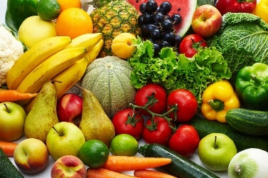

‘You don’t have to Eat Less You just have to Eat Right’
Vegetables and fruits are an important part of a healthy diet. No single fruit or vegetable provides all of the nutrients you need to be healthy. Eat plenty every day.
Low intake of fruit and vegetables is estimated to cause about 19% of gastrointestinal cancer, and about 31% of ischaemic heart disease and 11% of stroke worldwide. Overall, 2.7 million (4.9%) deaths are attributable to low fruit and vegetable intake.
Still, most populations are not consuming nearly enough, according to the FAO/WHO.
Research shows nine or ten servings of fruits and vegetables a day is optimal, dietary guidelines tend to recommend a minimum of five servings a day.
Fruits and vegetables can not only help prevent nutrient deficiency disorders, but also reduce the risk of cardiovascular diseases — another leading cause of morbidity and mortality around the globe — and many cancers. WHO attributes approximately 3 million deaths a year from such diseases to inadequate fruit and vegetable intake.
Many fruits and vegetables are also very high in dietary fibre, which can help move potentially harmful substances through the intestinal tract and lower blood cholesterol levels.
Micronutrients in fruits and vegetables, such as vitamin C and vitamin E, serve as powerful antioxidants that can protect cells from cancer-causing agents; vitamin C, in particular, can increase the body’s absorption of calcium — an essential mineral for strong bones and teeth — and iron from other foods. (Low iron levels can lead to anaemia, one of the most severe nutrition-related disorders, affecting about 2 billion people worldwide.)
Accumulating evidence suggests that fruits and vegetables could help prevent major diseases such as cardiovascular diseases (Ness AR, Powles, 1977) and certain cancers principally of the digestive system (World cancer, 1997) There are several mechanisms by which these protective effects may be mediated, involving antioxidants and other micronutrients, such as flavonoids, carotenoids, vitamin C and folic acid, as well as dietary fibre. These and other substances block or suppress the action of carcinogens and, as antioxidants, prevent oxidative DNA damage.
A diet rich in vegetables and fruits can lower blood pressure, reduce risk of heart disease and stroke, prevent some types of cancer, lower risk of eye and digestive problems, and have a positive effect upon blood sugar. Eat a variety of types and colors of fruits and vegetables to get mix of nutrients. Eat dark leafy greens; brightly colored red, yellow and orange vegetables and fruits; and cooked tomatoes.
Eat more vegetables and fruits each day
Cardiovascular disease: Higher the average daily intake of fruits and vegetables, lower the chances of developing cardiovascular disease. Compared with those in the lowest category of fruit and vegetable intake (less than 1.5 servings a day), those who averaged 8 or more servings a day were 30 percent less likely to have had a heart attack or stroke. (Hung, 2004)
Individuals who ate more than 5 servings of fruits and vegetables per had roughly a 20 percent lower risk of coronary heart disease (He,2007) and stroke, (He, 2006) compared with individuals who ate less than 3 servings per day.
Blood pressure: Diet rich in fruits, vegetables, and low-fat dairy products , restricted the amount of saturated and total fat reduced systolic blood pressure (the upper number of a blood pressure reading) by about 11 mm Hg and diastolic blood pressure (the lower number) by almost 6 mm Hg in high blood pressure patients.
Optimal Macronutrient Intake Trial for Heart Health (OmniHeart) showed that this fruit and vegetable-rich diet lowered blood pressure even more when some of the carbohydrate was replaced with healthy unsaturated fat or protein. (Appel, 2005)
Cancer: Numerous studies revealed that strong link between eating fruits and vegetables and protection against cancer. Some types of fruits and vegetables may protect against certain cancers.
American Institute for Cancer Research suggests that non-starchy vegetables—such as lettuce and other leafy greens, broccoli, bok choy, cabbage, as well as garlic, onions, and the like—and fruits “probably” protect against several types of cancers, including those of the mouth, throat, voice box, esophagus, and stomach; fruit probably also protects against lung cancer (Wiseman, 2008)
Tomatoes may help protect men against prostate cancer. (Giovannucci, 2007) One of the pigments that give tomatoes their red hue—lycopene—could be involved in this protective effect.
Diabetes: Greater consumption of whole fruits – especially blueberries, grapes, and apples – is associated with a lower risk of type 2 diabetes. Greater consumption of fruit juice is associated with a higher risk of type 2 diabetes (Muraki., et al., 2013)
Consumption of green leafy vegetables and fruit was associated with a lower risk of diabetes
(Bazzano, L.A., et al, 2008)Gastrointestinal health: Fruits and vegetables contain indigestible fiber, which absorbs water and expands as it passes through the digestive system. This can calm symptoms of an irritable bowel and, by triggering regular bowel movements, can relieve or prevent constipation.
(Lembo, 2003). The bulking and softening action of insoluble fiber also decreases pressure inside the intestinal tract and may help prevent diverticulosis.
Vision: Eating fruits and vegetables can also keep your eyes healthy, and may help prevent two common aging-related eye diseases—cataracts and macular degeneration—which afflict millions of Americans over age 65
(Christe, 2005)Eat good, Feel good
References:- Ness AR, Powles JW. Fruit and vegetables, and cardiovascular disease: a review. nternational Journal of Epidemiology 1997; 26: 1-13.
- World Cancer. Food, nutrition and the prevention of cancer: a global perspective. Washington (DC): American Institute for Cancer Research; 1997.
- Hung, H.C., et al., Fruit and vegetable intake and risk of major chronic disease. J Natl Cancer Inst, 2004. 96(21): p. 1577-84.
- He, F.J., et al., Increased consumption of fruit and vegetables is related to a reduced risk of coronary heart disease: meta-analysis of cohort studies. J Hum Hypertens, 2007. 21(9): p. 717-28.
- He, F.J., C.A. Nowson, and G.A. MacGregor, Fruit and vegetable consumption and stroke: meta-analysis of cohort studies. Lancet, 2006. 367(9507): p. 320-6.
- Appel, L.J., et al., Effects of protein, monounsaturated fat, and carbohydrate intake on blood pressure and serum lipids: results of the OmniHeart randomized trial. JAMA, 2005. 294(19): p. 2455-64.
- Wiseman, M., The second World Cancer Research Fund/American Institute for Cancer Research expert report. Food, nutrition, physical activity, and the prevention of cancer: a global perspective. Proc Nutr Soc, 2008. 67(3): p. 253-6.
- Giovannucci, E., et al., Risk factors for prostate cancer incidence and progression in the health professionals follow-up study. Int J Cancer, 2007.121(7): p. 1571-8.
- Muraki, I., et al., Fruit consumption and risk of type 2 diabetes: results from three prospective longitudinal cohort studies. BMJ, 2013. 347: p. f5001.
- Bazzano, L.A., et al., Intake of fruit, vegetables, and fruit juices and risk of diabetes in women. Diabetes Care, 2008. 31(7): p. 1311-7.